Прорачун моделирање и цртежи каиш(пљоснати ремен)- ног пара шк. 2022/23. год.
Израчунати потребне параметре и моделирати каишни пар на основу улазних података:
Снага електромотора: 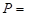 18.5 
Број обртаја електромотора:  1450 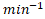
1450 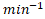
Потребан број обртаја гоњеног каишника: 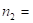 710
Осно растојање: 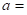 800 
Угао преносника: 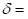 30 °
Равномеран рад преносника.
Задатак решити ако је каиш (пљоснати ремен):
- од стандардне коже,
- вишеслојни са вучним тракама од полиамида или полиестра.
Моделирати преносник снаге за варијанту када се користи вишеслојни каиш (пљоснати ремен) са вучним тракама од полиамида или полиестра.
Литература - извор знања:
Машински елементи II - Спасоје Драпић
Висина ремена (Т 4.14):
 3 ... 7
3 ... 7
Усвајам: 6
Однос подеоног пречника погонског каишника и висине (Т 4.14):
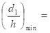 25 ... 30
Минималан
подеони
пречник се креће у границама: 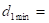 150 до 180
Усвајам (Стр. 161. М.Е. II): 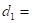 250
Пречник подеоног пречника гоњеног каишника рачунамо:
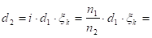 502.905
Фактор проклизавања: 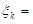 0.985 - Теорија
Усвајам (Стр. 161. М.Е. II): 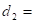 500
Број обртаја гоњеног каишника рачунамо:
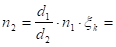 714.125
Висина ремена (Т 4.14):
0.5 ... 4
Усвајам: 3
Однос подеоног пречника погонског каишника и висине (Т 4.14):
80 ... 100
Минималан
подеони
пречник се креће у границама: 240 до 300
Усвајам (Стр. 161. М.Е. II): 250
Пречник подеоног пречника гоњеног каишника рачунамо:
502.905
Фактор проклизавања: 0.985 - Теорија
Усвајам (Стр. 161. М.Е. II): 500
Број обртаја гоњеног каишника рачунамо:
714.125
Како смо усвојили пречнике подеоних кружница истих вредности за каиш од стандардне коже као и са вучним тракама од полиамида или полиестра, следећи фактори и величине имају исте вредности у обе варијанте пљоснатог ремена:
Обухватни (обвојни) угао рачунамо на основу израза:
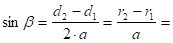 0.15625
 0.156893 rad
0.156893 rad
8.989 °
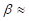 9 °
Обухватни угао износи: 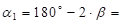 162 °
Фактор обухватног (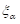) угла из Т 4.20, рачунамо интерполацијом:
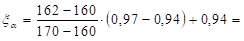 0.946
Фактор врсте и положаја (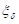) из Т 4.22, рачунамо интерполацијом:
За положај преносника: 30 °
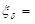 0.933
Фактор брзине (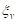) из Т 4.21, рачунамо интерполацијом:
За брзину ремена: 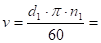 18.980 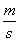
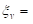 0.894
Дужина ремена:
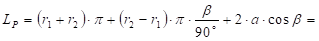 2797.669
Усвајам: 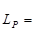 2800 - Стр. 160. M.E. II
Осно растојање рачунамо:
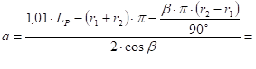 815.354
Обртни момент рачунамо:
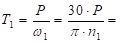 121835.853 
Обимну силу рачунамо:
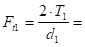 974.687 
Фактор неравномерности оптерећења из (Т 4.18):
За равномеран рад преносника према услову задатка:  1
1
Основни корисни напон, из (Т 4.19) се усвајају најмање вредности:
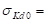 1.5 до 2.5 
Ширина ремена: 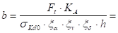 137.159
Усвајам ширину ремена: 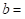 180 - (Т 4.23)
Усвајам ширину каишника: 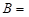 200 - (Т 4.23)

Основни корисни напон, из (Т 4.19) се усвајају најмање вредности:
6 до 8
Ширина ремена: 68.579
Усвајам ширину ремена: 90 - (Т 4.23)
Усвајам ширину каишника: 100 - (Т 4.23)
Учестаност промене напона савијања ремена:
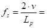 13.557 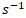
Обухватни (обвојни) угао:
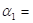 2.827 rad
Коефицијент трења, из (Т 4.14) се усвајају најмање вредности:
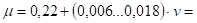 0.334 до 0.562
Сила у вучном краку ремена се рачуна на основу релација:
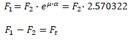
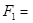 1595.379
Напон затезања у вучном краку рачунамо:
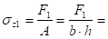 1.477
Напон затезања од центрифугалне силе рачунамо:
324231.926 до 360257.695 - усваја се већа вредност
0.360 - усваја се већа вредност
Густина ремена: 900 до 1000 (T 4.14)
Напон савијања преко погонске ременице рачунамо:
0.96
Модул еластичности на савијање: 40 до 90 - усваја се мања вредност (T 4.14)
Укупан максималан напон рачунамо:
2.797
Број промена напона савијања рачунамо:
1867799
Број промена напона савијања добијен испитивањем (Т 4.16):
10000000
Динамичка издржљивост ремена добијена испитивањем (Т 4.16):
2
Експонент једначине (Т 4.16):
5
Радни век ремена:
137768.991
38.269 
Коефицијент трења, из (Т 4.14) се усвајају најмање вредности:
0.314 до 0.431
Силу у вучном краку ремена рачунамо:
1656.006
Напон затезања у вучном краку рачунамо:
6.133
Напон затезања од центрифугалне силе рачунамо:
396283.46 до 432309.23 - усваја се већа вредност
0.432 - усваја се већа вредност
Густина ремена: 1100 до 1200 (T 4.14)
Напон савијања преко погонске ременице рачунамо:
12
Модул еластичности на савијање: 550 до 1000 (T 4.14)
Укупан максималан напон рачунамо:
18.566
Број промена напона савијања рачунамо:
3.112E+14
Број промена напона савијања добијен испитивањем (Т 4.16):
10000000
Динамичка издржљивост ремена добијена испитивањем (Т 4.16):
70
Експонент једначине (Т 4.16):
13
Радни век ремена:
2.295E+13
6376129241
Велико расипање вредности динамичке издржљивости каиша и ремена које је последица одступања структура и својства материјала чине наведену проверу века трајања приближном иако је теоријски најисправнија.
Да би се повећала тачност прорачуна треба по могућности користити податке добијене непосредним испитивањима самих произвођача или сопственим испитивањем одговарајућег материјала за одређене радне услове.
Погонско вратило
Снага која се преноси:
18.5
Број обртаја:
1450
Угаона брзина:
 151.844
151.844
Обртни момент:
121835.853
За материјал вратила Č.0545 из Т 2.3 М.Е.I усвајамо трајну динамичку чврстоћу на једносмерну промену напона за случај увијања:
 200
200
Напон увијања мора бити мањи од дозвољеног напона.
Дозвољени напон увијања:
66.667
Степен сигурности усвајамо из T2.5:
3

Називни пречник вратила:
 21.035
21.035
на израчунати пречник вратила додаје се дубина жљеба за клин и стандардизује се пречник вратила:
израчунатом
пречнику вратила: 21.035 одговара дубина жлеба за клин:
3.5 , те добијамо потребан пречник вратила:

Стандардне дужине клинова: 20, 25, 28, 32, 36, 40, 45, 50, 56, 63, 70, 80, 90, 100, 110, 125, 140, 180, 200, ... , 400, а за нормалне клинове и још: 5, 8, 10, 12, 15, 16, 18.
 24.535
24.535
како се из T 0.1 усвајају вредности за ред R5, R10, R20, R40, па тек на крају подешени бројеви, то се усваја:
пречник погонског вратила:
 60
60

T 4.7 M.E.II
називном пречнику од 60 одговара клин:
18
11
6.8
 0.5
0.5
провера исправности усвојеног клина:
 53.2 >
53.2 >  21.035
21.035
Гоњено вратило
Степен искоришћења се рачуна по обрасцу:
Степен искоришћења за каишне парове се креће у границама:
0.97 ... 0.98
усвајам: 0.975
Преносни однос:
2.030
Обртни момент на погонском вратилу:
121835.853
Обртни момент на гоњеном вратилу износи:
241197.882
Напон увијања мора бити мањи од дозвољеног напона.
Називни пречник вратила:
26.413
како се из T 0.1 усвајају вредности за ред R5, R10, R20, R40, па тек на крају подешени бројеви, то се усваја:
пречник гоњеног вратила:
71
T 4.7 M.E.II
називном пречнику од 71 одговара клин:
20
12
7.4
0.6
Стандардне дужине клинова: 20, 25, 28, 32, 36, 40, 45, 50, 56, 63, 70, 80, 90, 100, 110, 125, 140, 180, 200, ... , 400, а за нормалне клинове и још: 5, 8, 10, 12, 15, 16, 18.
провера исправности усвојеног клина:
63.6 > 26.413
Из услова да корисни напон буде мањи од дозвољеног корисног напона смо:
усвојили ширину ремена: 180 - (Т 4.23)
усвојили ширину каишника: 200 - (Т 4.23)
Пречник подеоне кружнице смо такође одредили:
250
Венац и главчина се спајају плочом. Усвајам дебљину плоче:
20
Пречник отвора за вратило:
60
Пречник главчине :
120
Дебљина венца каишника:
4
Испупчење венца каишника:
2
Ширина каишника:
208
Ширина каишника је у нашем случају већ одређена вредношћу из Т 4.23.
Из услова да корисни напон буде мањи од дозвољеног корисног напона смо:
усвојили ширину ремена: 90 - (Т 4.23)
усвојили ширину каишника: 100 - (Т 4.23)
Пречник подеоне кружнице смо такође одредили:
250
Венац и главчина се спајају плочом. Усвајам дебљину плоче:
10
Пречник отвора за вратило:
60
Пречник главчине :
120
Дебљина венца каишника:
4
Испупчење венца каишника:
1
Ширина каишника:
109
Ширина каишника је у нашем случају већ одређена вредношћу из Т 4.23.
Из услова да корисни напон буде мањи од дозвољеног корисног напона смо:
усвојили ширину ремена: 180 - (Т 4.23)
усвојили ширину каишника: 200 - (Т 4.23)
Пречник подеоне кружнице смо такође одредили:
500
Венац и главчина се спајају паоцима. Усвајам дебљину паока близу главчине:
40
Дебљина паока близу венца каишника:
32
Висина елипсе паока близу главчине:
100
Висина елипсе паока близу венца каишника:
80
Пречник отвора за вратило:
71
Пречник главчине :
142
Дебљина венца каишника:
5
Испупчење венца каишника:
2
Ширина каишника:
208
Ширина каишника је у нашем случају већ одређена вредношћу из Т 4.23.
Из услова да корисни напон буде мањи од дозвољеног корисног напона смо:
усвојили ширину ремена: 90 - (Т 4.23)
усвојили ширину каишника: 100 - (Т 4.23)
Пречник подеоне кружнице смо такође одредили:
500
Венац и главчина се спајају паоцима. Усвајам дебљину паока близу главчине:
20
Дебљина паока близу венца каишника:
16
Висина елипсе паока близу главчине:
50
Висина елипсе паока близу венца каишника:
40
Пречник отвора за вратило:
71
Пречник главчине :
142
Дебљина венца каишника:
5
Испупчење венца каишника:
1
Ширина каишника:
109
Ширина каишника је у нашем случају већ одређена вредношћу из Т 4.23.